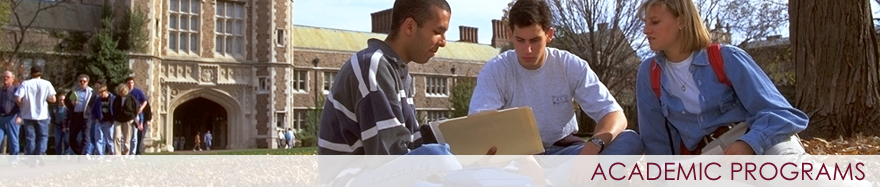

Where can i find the wustl academic calender?
Follow this link:Wustl Registrar
-

Follow this link:Wustl Registrar
Cornerstone is an on-campus resource that offers help for a variety of subjects and objectives. See some recommendations below:
| Resource | Link |
|---|---|
| Chemistry Help | Chemistry Help |
| Math Help | Math Help |
| Physics Help | Physics Help |
| Writing Help | Writing Help | Personal Statement Workshops | Personal Statements |
While transitioning into WUSTL studies, these courses below have been specifically chosen to get you a good introduction to academic life:
| Class | Number | Teacher |
|---|---|---|
| The Developing Mind | Psych 218 | Markson |
| Financial Accounting | ACCT 2610 | Jennings |
| Business Fundamentals | MGT 200 | Multiple Professors |
| Technical Writing | Engr 310 | Matteucci |
| MATLAB | CSE 200 | Zhang |